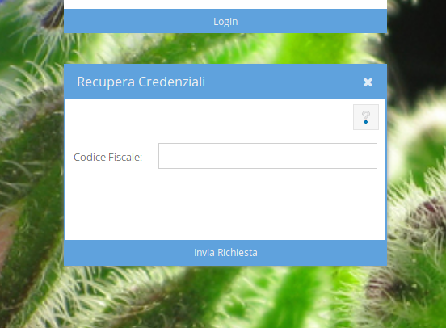

Nel caso in cui, per qualunque motivo, non ci si ricordasse più la password, la username o entrambe è possibile utlizzare il tasto Recupara Credenziali (rosso), nel form di login, ed inserire il proprio codice fiscale. Una mail per il recupero delle credenziali sarà inviata all'indirizzo indicato al momento della registrazione. Nel caso in cui non dovesse essere possibile accedere all'indirizzo di posta elettronica comunicato all'atto della registrazione bisognerà contattare l'amministratore.
